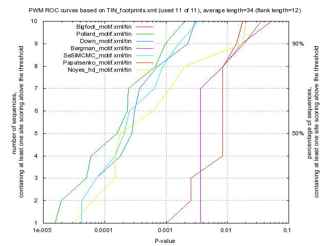

Kulakovskiy I.V., Favorov A.F., Makeev V.J. (2009) Motif discovery and motif finding from genome-mapped DNase footprint data. Bioinformatics 25(18): 2318-2325.
<up> DMMPMM motif TIN comparison [dmmpmm_compare_html]
|  |
motif alignment
motif similarity
|
Bigfoot |
Pollard |
Down |
Bergman |
SeSiMCMC |
Papatsenko |
Noyes_hd |
| Bigfoot |
1.0 |
0.3555 |
0.3484 |
0.8544 |
0.4124 |
0.4391 |
0.466 |
| Pollard |
0.3555 |
1.0 |
0.6539 |
0.3371 |
0.7281 |
0.2829 |
0.4729 |
| Down |
0.3484 |
0.6539 |
1.0 |
0.3335 |
0.7752 |
0.257 |
0.48 |
| Bergman |
0.8544 |
0.3371 |
0.3335 |
1.0 |
0.3914 |
0.4434 |
0.4988 |
| SeSiMCMC |
0.4124 |
0.7281 |
0.7752 |
0.3914 |
1.0 |
0.3191 |
0.5253 |
| Papatsenko |
0.4391 |
0.2829 |
0.257 |
0.4434 |
0.3191 |
1.0 |
0.3317 |
| Noyes_hd |
0.466 |
0.4729 |
0.48 |
0.4988 |
0.5253 |
0.3317 |
1.0 |
|